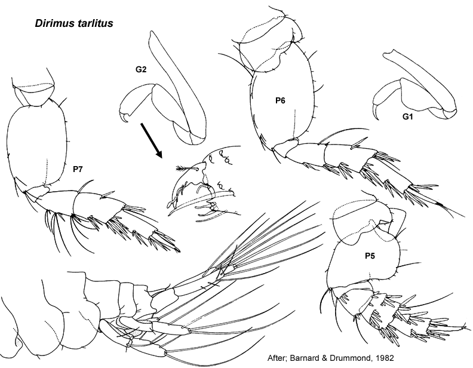

Dirimus tarlitus Barnard & Drummond, 1982: 133, figs 52–54.
Type Material. Lodged in the QM.
Type Locality. Middle Banks, Moreton Bay, Queensland.
Description. Based on Barnard & Drummond, 1982; 133, Figs 52–54.
Antenna 1 peduncular article 1 setal row with only slender
setae, proximal pair of setae simple; accessory flagellum 5
-articulate; primary flagellum 6–8 -articulate. Antenna 2 peduncular article 4 main setal row with robust and slender setae, proximal part of row evenly angled. Mandible incisors almost simple. Maxilla 1 palp with apical group of setae only.
Gnathopod 1 simple; coxa small, trapezoidal, subequal in size to coxa 2. Gnathopod 2 minutely subchelate, propodus palm slightly acute to transverse. Pereopod 3 coxa large, larger than coxa 4. Pereopod 4 coxa posteroventral lobe absent. Pereopod 5 basis without mediofacial brush of setae; dactylus without robust setae. Pereopod 6 basis moderately expanded, margins parallel; merus with few or no slender setae on posterior margin; dactylus well developed. Pereopod 7
coxa without long posterior spine; basis moderately expanded, posterior
margins tapering distally, with slender setae along posteroproximal
margin; dactylus well developed, without robust setae.
Epimeron 2 subequal in size to epimeron 3, posteroventral corner broadly rounded, both epimera with few or no setae. Epimeron 3 posteroventral corner broadly rounded. Uropod 1 inner ramus shorter than outer ramus, weakly fused to peduncle. Uropod 2 inner ramus shorter than outer ramus, not fused to peduncle. Telson broader than long, entire.
Distribution. Queensland: Middle Banks, Moreton Bay (Barnard & Drummond, 1982).

___________________________
This
publication should be cited as: Kilgallen, N.M. & Lowry, J.K. 2008.
Urohaustoriidae (Amphipoda): World Genera and Species. Version 1. 1
January 2008. http://crustacea.net.